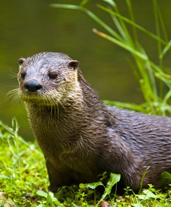
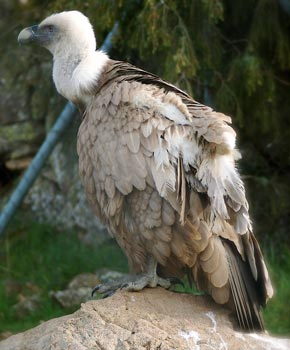
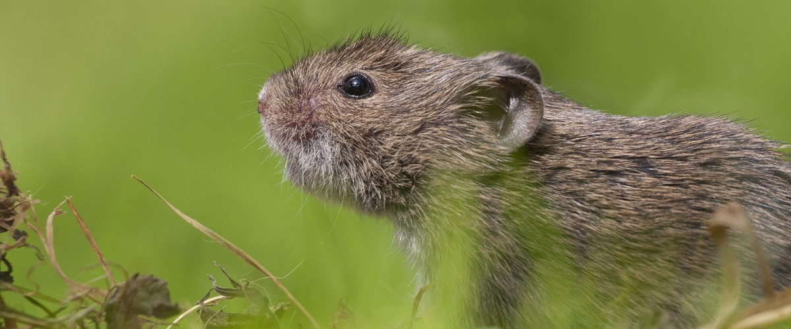
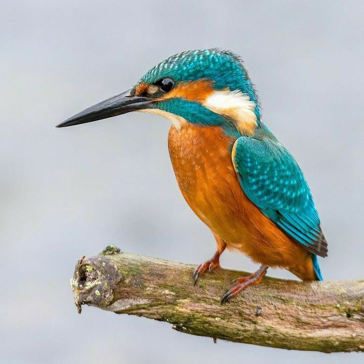
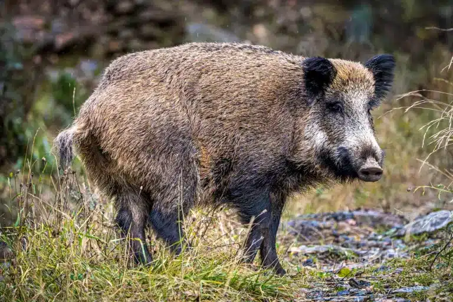

Especies del Parque
Estos son algunos de los habitantes del parque:

Nutria
La nutria europea o paleártica (Lutra lutra) es un mamífero carnívoro de hábitat acuático. Se alimenta de peces, ranas y pequeñas presas que caza en el río. Cerca de sus lugares de cobijo, podremos ver toboganes que crean para llegar rápidamente al agua.
Mamífero Acuático
Buitre leonado
El buitre leonado (Gyps fulvus) es un ave rapaz, una de las mayores que puede encontrarse en la Península Ibérica. Su alimentación principal es la carroña, que localiza con su aguda vista.
Ave Rapaz
Ciervo
El ciervo es uno de los herbívoros más tranquilos del parque. Se le puede ver al amanecer cerca de los claros, masticando hierba y echando un vistazo a su entorno antes de seguir caminando.
Mamífero Herbívoro
Zorro
El zorro rojo se mueve entre arbustos al atardecer buscando pequeños mamíferos y bayas. Es astuto y silencioso, y suele dejar rastro por las zonas menos transitadas del bosque.
Mamífero Carnívoro
Topillo
El topillo habita en las zonas más húmedas y verdes, cerca de los arroyos. Aunque es pequeño, su presencia es importante en el ecosistema porque sirve de alimento para aves rapaces y zorros.
Mamífero Pequeño roedor
Martín pescador
El martín pescador es un pájaro de colores muy vivos, que se posa sobre ramas junto al agua para lanzar un picado y atrapar peces pequeños con su pico afilado.
Ave Acuático
Jabalí
El jabalí aparece a veces en las zonas densas del monte. Es fuerte y de costumbres nocturnas, y con su hocico remueve el suelo en busca de raíces, insectos y bellotas.
Mamífero Nocturno
Libélula
La libélula es uno de los insectos más vistosos del humedal. Vuela rápidamente sobre el agua, cazando pequeños insectos y siempre volviendo a posarse junto a las juncias.
Insecto Acuático